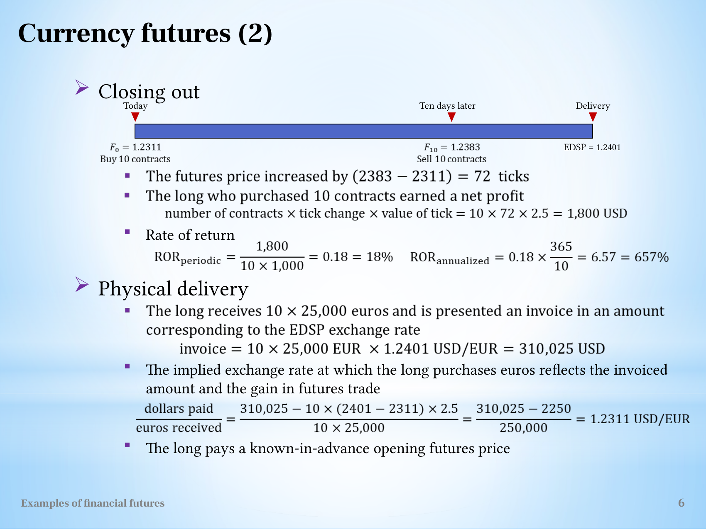

Derive a currency-futures delivery invoice and effective purchase rate
Explanation, worked examples and practice
Useful first: Convert futures quotations into payoff and conditional loss bounds
Outcome and conditions
ECFT: identify the traded and invoice currencies Physical delivery fixes the effective purchase rate
Study conditions, assessment scope and sources
Derive a matched physical currency-futures purchase including invoice, cumulative gain and effective rate. Required components: currency_units_and_direction, close_vs_delivery_cashflows, effective_rate_and_boundaries. Supported work may use the cited notes; independent checks use no notes, internet, solution or hints. A basic calculator and blank paper are allowed; reasoning, formula selection and assumptions must be supplied by the learner. Numerical examples below are agent-created hypothetical instantiations unless explicitly labelled as a finished-note example. They do not assert current market or policy facts.
Prerequisites and checks
Check the prerequisites
O010-P1 / item_version 1: O002 is needed because signed payoff must be scaled in the invoice currency. Prompt: Long100 EUR at1.20 USD/EUR, later1.25: signed gain? Key: USD5; \(100\,\mathrm{EUR}\times0.05\,\mathrm{USD}/\mathrm{EUR}\). Pass requires the keyed mechanism and qualification; partial means an omitted step; fail means a conflicting mechanism. Adequate committed evidence under a compatible criterion permits skipping this diagnostic. Otherwise repair through Outcome and conditions before continuing.
Motivation and explanation
EUR is the quantity delivered and USD/EUR is its unit price. Thus both invoice and futures gain are in USD. Let \(X=N\times25000\) EUR. A matched physical purchase costs \(XF_T\) USD. The cumulative long gain is \(X(F_T-F_0)\); subtracting it from the invoice leaves \(XF_0\). Dividing by \(X\) gives the initial USD/EUR quote. This algebra uses the same delivered quantity and endpoint and excludes funding, fees and mismatch. It does not imply the account needs no interim collateral. Closing earlier instead creates \(X(F_{\mathrm{close}}-F_0)\) and ends the contract: the final delivery branch is an alternative. Benchmark sampling/trim rules define EDSP; a reported quote is not automatically that benchmark.
Read the full explanation
Reading context
Deliver these complete reused passages before the worked example; the earlier concise teaching prompts are checkpoints, not substitutes. Necessary prerequisite lessons remain the routes specified above. Course-organization details in O001 are supporting context, not additional scoring components.
Source passage
Origin: reused complete checked passage Read the contract before calculating; fingerprint 9934681819e12121ce3bdcd2bf33e74747d3ecc2cf2232b8981de7f2236997ac. Heading depth alone is adapted.
Read the contract before calculating
A quotation alone has no monetary meaning until the unit of trading and minimum price increment are known. Let \(N\) be the number of contracts, \(\delta\) the tick size in quotation units and \(v\) the money value of one tick. The change from opening quotation \(F_0\) to closing quotation \(F_t\) is \((F_t-F_0)/\delta\) ticks. Thus, before fees and financing effects,
This is a unit conversion: quotation change divided by quotation units per tick, multiplied by currency per tick. The long benefits when the quotation rises. The short benefits when it falls. The lecture's index and currency calculations use the same rule, even though their quoted units and settlement currencies differ. L11(ExamplesOfFinancialFutures).pptx, slide 4 L11(ExamplesOfFinancialFutures).pptx, slide 6
Margins and marking to market explains why daily transfers telescope to the opening-to-closing difference. Initial margin is a deposit supporting the position, rather than the value of the underlying asset. The tutorial return convention is
where \(M_0\) is initial margin per contract and \(d\) is the holding period in days. This convention explains the large quoted returns: the denominator is margin, not the contract's full exposure. The annual figure linearly rescales the particular trade; it does not establish a repeatable annual investment outcome. In calculations using this convention, subsequent margin calls, withdrawals, fees and financing are outside the displayed denominator. L11(ExamplesOfFinancialFutures).pptx, slide 4 L11(ExamplesOfFinancialFutures).pptx, slide 6
Source passage
Origin: reused complete checked passage ECFT: identify the traded and invoice currencies; fingerprint 9934681819e12121ce3bdcd2bf33e74747d3ecc2cf2232b8981de7f2236997ac. Heading depth alone is adapted.
ECFT: identify the traded and invoice currencies
The Euro Currency Futures Tutorial (ECFT) trades EUR 25,000 per contract against the US dollar. The euro is the underlying/traded/base currency. The dollar is the invoice/variable currency. A quotation of \(1.2311\ \mathrm{USD/EUR}\) means that one euro costs 1.2311 dollars. The long receives euros and pays dollars at delivery; the short delivers euros and receives the dollar amount. L11(ExamplesOfFinancialFutures).pptx, slide 5
One tick is USD 0.0001 per euro, which the source describes as one hundredth of a US cent per euro. Its monetary value is
The EUR units cancel. Initial margin is USD 1,000, about 3.5% of the contract value when the exchange rate is 1.1345 USD/EUR. Delivery months are the same four quarterly months. The last trading day is the third Wednesday of the delivery month at 10:30 a.m.; delivery is the next business day. EDSP averages the rates of 15 reference banks at 10:30 a.m., excluding the three highest and three lowest. L11(ExamplesOfFinancialFutures).pptx, slide 5

The currency specification keeps quotation units, tick size and margin currency distinct. L11(ExamplesOfFinancialFutures).pptx, slide 5
Closing after ten days
The long buys ten contracts at \(F_0=1.2311\) and closes at \(F_{10}=1.2383\). The rise is \(0.0072/0.0001=72\) ticks, giving
The margin return is \(1800/(10\times1000)=18\%\). Simple annual scaling yields \(0.18\times365/10=6.57=657\%\). The gain is in dollars even though the underlying contract size is in euros. L11(ExamplesOfFinancialFutures).pptx, slide 6
Physical delivery fixes the effective purchase rate
If the ten contracts remain open until delivery, the long receives EUR 250,000. At EDSP \(1.2401\), the invoice is \(250000\times1.2401=\text{USD }310{,}025\). The opening-to-delivery gain is \(10(2401-2311)(2.5)=\text{USD }2{,}250\). Combining the invoice and the futures gain gives
The long pays the EDSP invoice but has already received offsetting futures gains. This is why the effective purchase price reproduces the opening futures rate in the source's matched delivery example. The ten-day USD 1,800 gain and the delivery USD 2,250 gain describe different exit times and must not be added together. The calculation leaves funding timing and transaction costs outside the illustration. L11(ExamplesOfFinancialFutures).pptx, slide 6

The source currency timeline and invoice calculation show the alternative closing and delivery paths. L11(ExamplesOfFinancialFutures).pptx, slide 6
Worked example
O010-W1 / item_version 1, worked_example. Prompt: Hypothetical ECFT: EUR25000 per contract; quote USD per EUR; tick0.0001, initial margin USD1000 per contract. To buy EUR later you go long 10 at 1.2311. Alternative A closes at 1.2383 after 10 days; alternative B holds to physical delivery with EDSP 1.2401. State base/invoice currencies, compute tick value, A \(\mathrm{P/L}\) and margin return (also simple365-day annualisation), \(B\) invoice and cumulative futures gain, net USD purchase cost and effective USD/EUR. Explain sign, matching and costs assumptions, why the paths cannot be combined, and whether the specification/return proves current terms or an underlying yield.
Steps and interpretation: Underlying/base EUR, quote/invoice USD; \(\text{tick}=25000\times.0001=\mathrm{USD}2.50\). Bought amount \(\mathrm{EUR}\,250000\). A \(G=250000\times (1.2383-1.2311)=\mathrm{USD}1800.000000\); margin \(\mathrm{USD}\,10000\), return \(18\%\), simple annualised \(657\%\). \(B\) \(\text{invoice}=250000\times 1.2401=\mathrm{USD}310025.000000\); cumulative long \(G=\mathrm{USD}\,2250.000000\). The net purchase cost, invoice minus \(G\), is \(\mathrm{USD}\,307775.000000\). Dividing by the matching \(\mathrm{EUR}\,250000\) gives the effective price \(\frac{\mathrm{USD}\,307775.000000}{\mathrm{EUR}\,250000}=1.2311\,\mathrm{USD}/\mathrm{EUR}\). The same quantity/currency and settlement endpoint make the algebra cancel EDSP; funding, fees and basis/contract mismatch are excluded. A closed trade cannot also receive \(B\) held gain. Increases in USD/EUR raise physical EUR purchase cost and produce a compensating long gain. Collateral return is not the currency asset yield; hypothetical specifications are not current verified exchange rules.
Supported completion
Write your reasoning, then reveal the complete key to check each step.
A local draft for your own study.
Reveal explanation
Key: Underlying/base EUR, quote/invoice USD; \(\text{tick}=25000\times.0001=\mathrm{USD}2.50\). Bought amount \(\mathrm{EUR}\,50000\). A \(G=50000\times (1.2020-1.2000)=\mathrm{USD}100.000000\); margin \(\mathrm{USD}\,2000\), return \(5\%\), simple annualised \(365\%\). \(B\) \(\text{invoice}=50000\times 1.2050=\mathrm{USD}60250.000000\); cumulative long \(G=\mathrm{USD}\,250.000000\). The net purchase cost, invoice minus \(G\), is \(\mathrm{USD}\,60000.000000\). Dividing by the matching \(\mathrm{EUR}\,50000\) gives the effective price \(\frac{\mathrm{USD}\,60000.000000}{\mathrm{EUR}\,50000}=1.2000\,\mathrm{USD}/\mathrm{EUR}\). The same quantity/currency and settlement endpoint make the algebra cancel EDSP; funding, fees and basis/contract mismatch are excluded. A closed trade cannot also receive \(B\) held gain. Increases in USD/EUR raise physical EUR purchase cost and produce a compensating long gain. Collateral return is not the currency asset yield; hypothetical specifications are not current verified exchange rules.
Allowed support: show the named definition or equation in Motivation and explanation, then ask for the missing substitution and interpretation. At most two hints: first identify the relevant distinction; second point to the first keyed step. Reveal the worked solution if those fail. Supported success does not establish acquisition. Fade assistance only once the learner explains the keyed steps; then hide the solution and use an unused full check.
Rubric and independence
Self-assessment criteria and tutor checks
Pass requires every listed component, all requested outputs and essential keyed reasoning without a critical conceptual error. Algebraically equivalent formulas, explicitly defined opposite cash-flow signs and equivalent plain-language reasoning are accepted. Partial means a missing component or a correct method with an unresolved isolated arithmetic slip; fail means the central mechanism or condition is wrong. Unscorable means the response or help/exposure conditions cannot be established. Unknown conditions never certify independence. Arithmetic slips require independent correction before a pass. No numerical grade is invented.
Critical errors: Inverting USD/EUR without changing cash-flow units; adding gain to purchase cost; using close and delivery simultaneously; claiming a hedge with mismatched quantities or ignoring funding.
Acquisition requires two distinct unassisted passes from I1/I2/D1/D2 using the exact six routes in metadata. Each full prompt and key covers every component; any pair therefore covers the whole outcome twice. A fresh D item used for acquisition cannot later certify delayed retention. Worked/support/prerequisite items and the narrow C1 correction cannot substitute for a full check. The finite bank must not be reused after exposure; request a plan_issue when fewer than two fresh full items remain.
| Component | I1 | I2 | D1 | D2 |
|---|---|---|---|---|
| currency_units_and_direction | required | required | required | required |
| close_vs_delivery_cashflows | required | required | required | required |
| effective_rate_and_boundaries | required | required | required | required |
Misconceptions and correction
An invoice plus a favourable long gain usually signals confusion between cash received and purchase cost. Write invoice as an outflow, gain as an inflow; subtract once, using matching EUR amounts. Observe the learner's reasoning before diagnosing: a sign or omitted word alone is tentative. Score before help. O010-C1 / item_version 1, narrow_correction. Fresh prompt: Fresh narrow check: \(\mathrm{EUR}\,100\) invoice at \(1.40\,\mathrm{USD}/\mathrm{EUR}\), matched long entry \(1.35\). Net purchase cost? Key and rubric: \(\text{Invoice USD }140-\text{gain USD }5=\mathrm{USD}\,135\), effective \(1.35\,\mathrm{USD}/\mathrm{EUR}\); same EUR quantity and no costs assumed. Pass only if the keyed repaired component is supplied; partial for an omission or arithmetic slip; fail for the same conflicting mechanism. C1 is not a full independent check. After two ineffective hints show the relevant worked step; after another failed correction pause and return to the named prerequisite or explanation.
Immediate and delayed checks
All items are item_version 1 and full_capability_check. I1/I2 are immediate forms; D1/D2 are distinct delayed forms. Delayed success requires an unused unassisted item before recap, at least 24 actual elapsed hours after acquisition and the most recent relevant teaching/solution exposure, with intervening exposure recorded. A date change alone does not qualify. Early D attempts may be acquisition checks only. Each item is a bounded parallel or near-context variant, not proof of broad transfer. Each key states the full required response; do not improvise extra variants.
A local draft for your own study.
Reveal explanation
Key and essential rubric: Underlying/base EUR, quote/invoice USD; \(\text{tick}=25000\times.0001=\mathrm{USD}2.50\). Bought amount \(\mathrm{EUR}\,75000\). A \(G=75000\times (1.0960-1.1000)=\mathrm{USD}-300.000000\); margin \(\mathrm{USD}\,3000\), return \(-10\%\), simple annualised \(-304.167\%\). \(B\) \(\text{invoice}=75000\times 1.0920=\mathrm{USD}81900.000000\); cumulative long \(G=\mathrm{USD}\,-600.000000\). The net purchase cost, invoice minus \(G\), is \(\mathrm{USD}\,82500.000000\). Dividing by the matching \(\mathrm{EUR}\,75000\) gives the effective price \(\frac{\mathrm{USD}\,82500.000000}{\mathrm{EUR}\,75000}=1.1000\,\mathrm{USD}/\mathrm{EUR}\). The same quantity/currency and settlement endpoint make the algebra cancel EDSP; funding, fees and basis/contract mismatch are excluded. A closed trade cannot also receive \(B\) held gain. Increases in USD/EUR raise physical EUR purchase cost and produce a compensating long gain. Collateral return is not the currency asset yield; hypothetical specifications are not current verified exchange rules. All components are required.
A local draft for your own study.
Reveal explanation
Key and essential rubric: Underlying/base EUR, quote/invoice USD; \(\text{tick}=25000\times.0001=\mathrm{USD}2.50\). Bought amount \(\mathrm{EUR}\,100000\). A \(G=100000\times (1.2560-1.2500)=\mathrm{USD}600.000000\); margin \(\mathrm{USD}\,4000\), return \(15\%\), simple annualised \(273.75\%\). \(B\) \(\text{invoice}=100000\times 1.2600=\mathrm{USD}126000.000000\); cumulative long \(G=\mathrm{USD}\,1000.000000\). The net purchase cost, invoice minus \(G\), is \(\mathrm{USD}\,125000.000000\). Dividing by the matching \(\mathrm{EUR}\,100000\) gives the effective price \(\frac{\mathrm{USD}\,125000.000000}{\mathrm{EUR}\,100000}=1.2500\,\mathrm{USD}/\mathrm{EUR}\). The same quantity/currency and settlement endpoint make the algebra cancel EDSP; funding, fees and basis/contract mismatch are excluded. A closed trade cannot also receive \(B\) held gain. Increases in USD/EUR raise physical EUR purchase cost and produce a compensating long gain. Collateral return is not the currency asset yield; hypothetical specifications are not current verified exchange rules. All components are required.
A local draft for your own study.
Reveal explanation
Key and essential rubric: Underlying/base EUR, quote/invoice USD; \(\text{tick}=25000\times.0001=\mathrm{USD}2.50\). Bought amount \(\mathrm{EUR}\,125000\). A \(G=125000\times (1.2970-1.3000)=\mathrm{USD}-375.000000\); margin \(\mathrm{USD}\,5000\), return \(-7.5\%\), simple annualised \(-182.5\%\). \(B\) \(\text{invoice}=125000\times 1.2940=\mathrm{USD}161750.000000\); cumulative long \(G=\mathrm{USD}\,-750.000000\). The net purchase cost, invoice minus \(G\), is \(\mathrm{USD}\,162500.000000\). Dividing by the matching \(\mathrm{EUR}\,125000\) gives the effective price \(\frac{\mathrm{USD}\,162500.000000}{\mathrm{EUR}\,125000}=1.3000\,\mathrm{USD}/\mathrm{EUR}\). The same quantity/currency and settlement endpoint make the algebra cancel EDSP; funding, fees and basis/contract mismatch are excluded. A closed trade cannot also receive \(B\) held gain. Increases in USD/EUR raise physical EUR purchase cost and produce a compensating long gain. Collateral return is not the currency asset yield; hypothetical specifications are not current verified exchange rules. All components are required.
A local draft for your own study.
Reveal explanation
Key and essential rubric: Underlying/base EUR, quote/invoice USD; \(\text{tick}=25000\times.0001=\mathrm{USD}2.50\). Bought amount \(\mathrm{EUR}\,150000\). A \(G=150000\times (1.1515-1.1500)=\mathrm{USD}225.000000\); margin \(\mathrm{USD}\,6000\), return \(3.75\%\), simple annualised \(152.083\%\). \(B\) \(\text{invoice}=150000\times 1.1530=\mathrm{USD}172950.000000\); cumulative long \(G=\mathrm{USD}\,450.000000\). The net purchase cost, invoice minus \(G\), is \(\mathrm{USD}\,172500.000000\). Dividing by the matching \(\mathrm{EUR}\,150000\) gives the effective price \(\frac{\mathrm{USD}\,172500.000000}{\mathrm{EUR}\,150000}=1.1500\,\mathrm{USD}/\mathrm{EUR}\). The same quantity/currency and settlement endpoint make the algebra cancel EDSP; funding, fees and basis/contract mismatch are excluded. A closed trade cannot also receive \(B\) held gain. Increases in USD/EUR raise physical EUR purchase cost and produce a compensating long gain. Collateral return is not the currency asset yield; hypothetical specifications are not current verified exchange rules. All components are required.
Content provenance and generation boundaries
Sources and scope
The complete checked-note passages above are reused with only heading-depth adaptation; exact origins and fingerprints are in source_manifest.md. Existing plan-created hypothetical exercises and their full keys are retained from P003; their algebra instantiates the included checked definitions. No new external academic claims are introduced. All figures retain checked vault-relative asset paths, captions and source qualifications. Main examples and assessment routes are fully prepared here.
Preserved assessment contract: only the named prepared full-capability items and six routes may establish acquisition or delayed evidence. Additional verified examples or practice may support explanation but cannot replace a named full check or reassessment gate. Teach may accept an independently verified equivalent method meeting the same pre-answer components and conditions. Ambiguous criteria or an exhausted fresh bank return to plan. The current objective revision is 2; unchanged item/criterion versions remain those explicitly stated above.